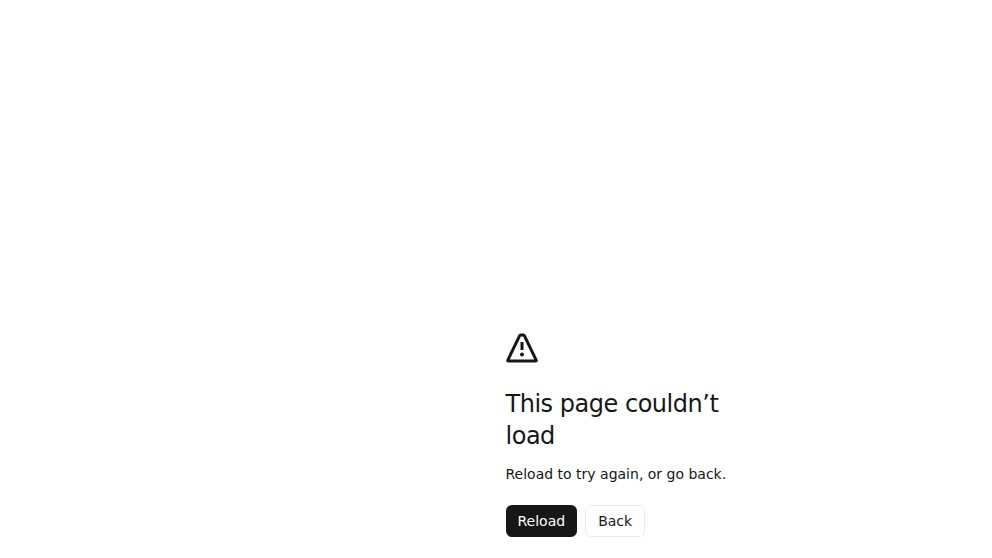
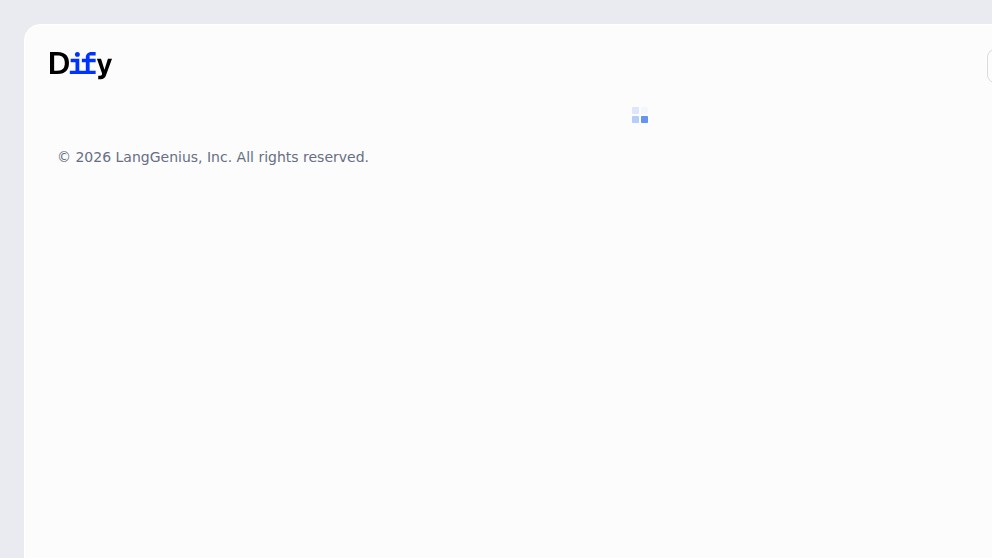

Dify 1.14.0 docker-compose: the profile flag the README forgets
The official Dify docker/docker-compose.yaml ships eleven services, of which the database and the vector store are gated behind separate Compose profiles. If you do what most quickstart blogs say (docker compose --profile=weaviate up -d), one of the services — plugin_daemon — panics in a loop because db_postgres isn't running. Here's the full container log, the trivial fix, and the resource numbers from a real install.
We're the team behind SimpleReview, a Chrome extension that drafts code-fix PRs on whatever site you click. Not affiliated with LangGenius (the company behind Dify). This page is a short deployment note from one real install on one Linux box, dated above. If we got something wrong, open a GitHub issue and we'll fix it.
What "default" actually starts
We sparse-cloned langgenius/dify at main on 2026-05-07 (commit 9331024) and copied the bundled docker/.env.example to .env with one change — remapping EXPOSE_NGINX_PORT from 80 to 18180 because port 80 was already taken on this VM.
cd dify/docker
cp .env.example .env
sed -i 's/^EXPOSE_NGINX_PORT=80/EXPOSE_NGINX_PORT=18180/' .env
docker compose --profile=weaviate up -dCompose returned in 58 seconds with eleven containers reportedly "Started". Among them:
| Service | Image | Profile |
|---|---|---|
| api / worker / worker_beat | langgenius/dify-api:1.14.0 | default |
| web | langgenius/dify-web:1.14.0 | default |
| plugin_daemon | langgenius/dify-plugin-daemon:0.6.0-local | default |
| sandbox | langgenius/dify-sandbox:0.2.15 | default |
| nginx | nginx:latest | default |
| redis | redis:6-alpine | default |
| ssrf_proxy | ubuntu/squid:latest | default |
| weaviate | semitechnologies/weaviate:1.27.0 | weaviate |
| db_postgres | postgres:15-alpine | postgresql |
The catch: db_postgres sits behind profiles: [postgresql]. If you only pass --profile=weaviate, Postgres never starts.
What plugin_daemon does about a missing Postgres
Within seconds, docker compose ps showed plugin_daemon in Restarting (2) state. docker logs on the container revealed why:
[error] failed to initialize database, got error
failed to connect to `host=db_postgres user=postgres database=dify_plugin`:
hostname resolving error
(lookup db_postgres on 127.0.0.11:53: server misbehaving)
ERROR failed to init dify plugin db
error="failed to connect to `host=db_postgres user=postgres database=postgres`:
hostname resolving error
(lookup db_postgres on 127.0.0.11:53: server misbehaving)"
panic: failed to init dify plugin dbThe Compose default restart: always kicks in. After ten minutes of the same failure we counted ten panic restarts on a single docker inspect ... --format '{{.RestartCount}}'.
plugin_daemon has depends_on: db_postgres, but db_postgres is in profile postgresql while plugin_daemon is in the default profile. Compose interprets this as: bring plugin_daemon up regardless; if its dependency isn't enabled, that's not Compose's problem. The result: a perpetual panic-restart loop on a service the rest of the stack depends on.
A worse version of this would be the API container falling into the same loop — but the API and worker happen to default to DB_HOST=db_postgres and tolerate the missing host until you actually try to log in. We saw this when POST /console/api/setup returned 502 Bad Gateway — nginx had no upstream because the API was wedged on its first DB query.
The fix
Always pass both profiles when bringing the stack up:
docker compose --profile=weaviate --profile=postgresql up -d
After the second profile was added, db_postgres-1 reached Healthy in 23 s, plugin_daemon stayed up, and POST /console/api/setup went to 200. The API container went green-healthy at the same time.
The signin page hits Next.js's "This page couldn't load" if the API is wedged
While we were debugging the missing Postgres, we tried opening /signin in a browser and got the Next.js generic runtime-error page rather than the actual signin form. Screenshot below.

/signin renders when the api container can't fulfill the initial RSC request — a generic Next.js error page with no clue about the underlying Postgres-not-running issue. The browser console is the only place that tells you it's a 502 from nginx.The /install route is more graceful — it renders the Dify logo and a footer credit (© 2026 LangGenius, Inc.) while it waits for the API. Users who land there during boot at least see a recognisable shell rather than a stack trace.

/install route during the first ~30 s of API boot. The small grey spinner top-right is the only signal that anything is happening; we caught the screenshot mid-load.Resource budget at idle
Once everything was healthy and we'd created the admin account, we measured idle memory across the eleven containers. Numbers from docker stats --no-stream:
| Container | RSS (MiB) | Notes |
|---|---|---|
| api | 211 | Spikes to ~120 % CPU on first request as it lazy-loads model configs |
| worker | 218 | Same image as api; idle but resident |
| worker_beat | 185 | Celery beat — drops to ~150 once the schedule loop is steady |
| web (Next.js) | 80 | Production build, prerendered routes |
| plugin_daemon | ~140 | Goes from 0 to ~140 MiB during plugin init |
| db_postgres | ~110 | Empty schema; will grow with chat/document data |
| weaviate | 34 | No vectors yet |
| ssrf_proxy (squid) | 41 | Required for outbound LLM calls inside the sandbox |
| sandbox | 35 | Goes up sharply when running user-submitted code |
| nginx + redis | ~16 | Combined |
| Total | ~1326 MiB | Idle, single-tenant, no chats yet |
So the practical floor for a Dify-with-Weaviate self-host is around 1.5 GB RAM resident at idle. The 4-GB-RAM VPS recommendations you'll see online are not paranoia — they're for the moment you actually run a workflow with a 7B local model and a knowledge base attached.
Things we'd change in the README
- Make the profile flag part of the canonical command. The current Quickstart shows
docker compose up -d; on a clean machine that brings up zero of the optional services and you discover the gap by reading container logs.docker compose --profile=postgresql --profile=weaviate up -dought to be the copy-paste line. - Add a healthcheck guard on
plugin_daemon. Right now it depends ondb_postgresat runtime but happily starts beforedb_postgresis reachable. Acondition: service_healthyon the dependency would prevent the panic loop and produce a cleaner error. - Surface the 502 in
/signin. The Next.js "This page couldn't load" message is correct but unhelpful — a small "API not ready, retrying…" banner would shave hours off most first-time-deploy debugging sessions. - Drop the
0.6.0-localtag. The plugin daemon image suffix-localon a public registry tag is confusing; if it's the production image, drop the suffix; if it isn't, document what it is.
Where this fits
One short, honest write-up per LLM/CMS/forum tool we actually run on a real Linux box. Adjacent: Open WebUI on Linux Docker — first 90 seconds, measured, Discourse self-hoster's handbook. SimpleReview is the Chrome extension that turns whatever element you click on a broken admin into a draft code-fix PR — Dify admin forms included.